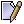

| Icon |
Description |
Shortcut |
Function
|
|
Up |
Alt-UP |
Scroll upward by half a screen
|
|
Down |
Alt-DOWN |
Scroll downward by half of a screen
|
|  |
LabelMark |
none |
Mark the timeline(s)
|
|
LabelMove |
none |
Move the marked timeline(s)
|
 |
LabelDelete |
none |
Delete the marked timeline(s)
|
|
LabelExpand |
Alt-E |
Expand the Y-axis tree label by 1 level
|
|
LabelCollapse |
Alt-C |
Collapse the Y-axis tree label by 1 level
|
 |
Backward |
Alt-LEFT |
Scroll Backward by half a screen
|
|
Forward |
Alt-RIGHT |
Scroll Forward by half a screen
|
|
ZoomUndo |
Alt-U |
Undo the previous zoom operation
|
|
ZoomOut |
Alt-O |
Zoom Out by 1 level in time
|
 |
ZoomHome |
Alt-H |
Reset zoom to the initial resolution in time
|
 |
ZoomIn |
Alt-I |
Zoom In by 1 level in time
|
|
ZoomRedo |
Alt-R |
Redo the previous zoom operation
|
|
SearchBackward |
Alt-B |
Search backward in time
|
|
SeachInitialize |
Alt-S |
Search Initialization from last popup InfoBox's time
|
|
SearchForward |
Alt-F |
Search forward in time
|
 |
CanvasReDraw |
Alt-D |
Redraw canvas to synchronize changes from Preference/Legend window
or Yaxis label panel.
|
|
Print |
none |
Print the Timeline window
|
 |
Exit |
none |
Exit the Timeline window
|
![[*]](crossref.png) contains the list of functionalities of the buttons found in the toolbar.
contains the list of functionalities of the buttons found in the toolbar.